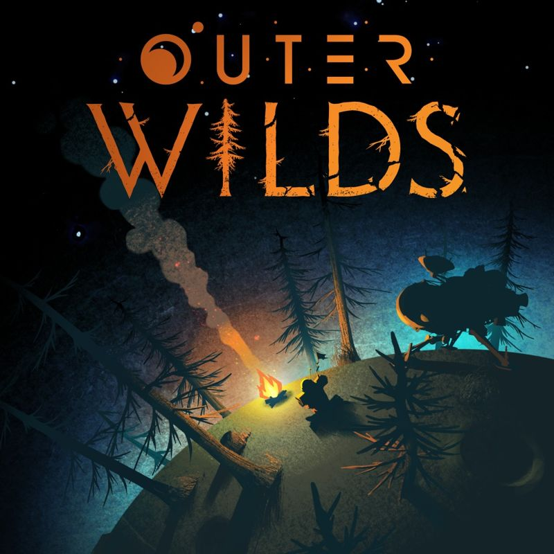

Outer Wilds is a 2019 action-adventure game developed by Mobius Digital and published by Annapurna Interactive.
It first released for Windows, Xbox One, and PlayStation 4 before releasing for PlayStation 5 and Xbox Series X/S in 2022.
The game features the player character exploring a solar system stuck in a 22-minute time loop that ends with the star going supernova.
| Developer |
Mobius Digital |
| Genre |
Action Adventure Game |
| Camera |
First Person |